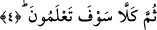

ve bundan derhâl vazgeçmeleri gerektiğini bildirmek için gelmiştir. Yâni, “Hayır,
mesele onların zannettiği gibi değil! İnsanın üstünlüğü ve saâdeti; yardımcıları, kabilesi
ve malının çokluğuyla değildir. Bu düşüncenizden vazgeçin ve bu husustaki hatâyı
anlayın!” Burada akıllı bir kişinin himmetinin büyük bir kısmını dünyaya tahsis
etmemesi gerektiğine tenbih vardır. Çünkü bunun âkıbeti kötü bir son ve acı bir
pişmanlıktır.
“Yakında bileceksiniz.” Yâni, mahşerin konkunç manzarasını gördüğünüz zaman
içinde bulunduğunuz hatayı yakında bileceksiniz. Bu âyette yer alan “ilm” kelimesi
“mârifet” anlamınadır. Bu sebeple ona bir mef’ûl takdir edilmiştir.
Bu ifâdede bir uyarı ve korkutma vardır. Ta ki korksunlar ve gafletlerinden uyansınlar.
Hasan Basrî (rh.) der ki: “Etrâfında gördüğün insanların kalabalıklığı aslâ seni
aldatmasın! Çünkü sen tek başına ölecek, tek başına diriltilecek ve tek başına hesâba
çekileceksin.”
4. Elbette yakında bileceksiniz!
Bu âyet-i kerime önceki âyette geçen caydırma ve uyarıyı tekid için yapılmış bir
tekrârdır. Âyetteki “sümme/sonra” edatı ise, ikinci uyarının birinciden daha vurgulu ve
daha güçlü olduğunu ifâde etmektedir. Çünkü ikinci uyarıda birincide olmayan bir
pekiştirme vardır. İkincide, “mertebe îtibârıyla uzaklık”ın, “zaman îtibârıyla uzaklık”
mesâbesine indirilmesi mânâsı vardır. Sadece derecelendirme için olan “sümme”
lafzının basamak basamak yukarı çıkma mânâsını ifâde için kullanılması söz konusudur.
Bu tıpkı nasihat ettiğin kimseye: “Sana söylüyorum! Bak sana söylüyorum! Böyle
yapma!” demen gibidir.
Veya birinci âyet, “ölüm anında can vermekte olan kişiye Cennet veya Cehennem
müjdelendiği anda bileceksiniz” veya “kabirde, Münker ve Nekir’in, “Rabbin kim,
dinin ne, Peygamberin kim?” diye sorduğu anda bileceksiniz” demektir. İkinci âyet ise,
“Ölümden sonra dirilip, mezarlardan kalkarak mahşere gelirken, bir münâdînin,
“Filanca öyle bir bedbaht oldu ki o bedbahlıktan sonra bir daha aslâ saâdet
göremeyecektir” diye nidâ ettiği ve “Ey günahkarlar! Ayrılın bir tarafa bu gün!”
(Yasin, 36/59) denildiği anda bileceksiniz” demektir. Eğer iki âyeti böyle tefsir edersek
o zaman bu âyette tekrâr olmamış olur. Çünkü iki âyet arasında; her iki “bilme” fiilinin
zaman ve müteallaklarının ayrı olması sebebiyle farklılık meydana gelmiş olur. Zira
günahkâr kişi, her iki zamanda başka bir çeşit azapla karşılaşır.
“Sümme” kelimesi, lügavî mânâsında olduğu üzere burada da iki hâdise arasında bir
zaman aralığı olduğunu göstermektedir. Zîrâ “ölüm” ile “nüşûr: kıyemet günü mahşere
gelmek üzere kabirlerden kalkma”, yine “kabir hayatı” ile “nüşûr” arasında bir zaman